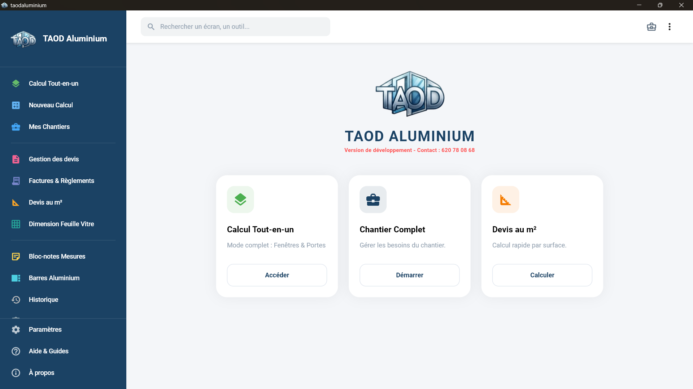

Précision totale
Fini les erreurs de coupe. L'app gère les séries Libanais, Alu 82, Technal et plus.
01L'outil métier des vitriers
TaodAluminium réunit vos calculs, vos chantiers et vos devis dans une seule application claire, conçue pour le terrain.

Aperçu de démonstration · hors retraits de coupe
Aperçu illustratif des options de vitrage
Un aperçu à personnaliser dans l'application.
Exemple visuel · aucun prix ni document réel
PAR OÙ COMMENCER ?
Pas besoin de chercher dans un long menu : chaque espace répond à un besoin précis de votre atelier.
Comprendre les bénéfices et les outils qui vous font gagner du temps.
Voir les avantages ↗ 02Explorer l'interface réelle Windows et Android avant de télécharger.
Explorer l'interface ↗ 03Choisir Android ou Windows et commencer en quelques minutes.
Voir l'installation ↗DANS L'APPLICATION
Une interface claire pour calculer, gérer vos chantiers et préparer vos documents professionnels.


VERSION ANDROID
Retrouvez les outils essentiels de TaodAluminium sur votre téléphone, sur le chantier comme à l'atelier.
Télécharger l'APK Android


UN VRAI GAIN AU QUOTIDIEN
Moins de calculs, moins de pertes et des clients mieux servis.
Fini les erreurs de coupe. L'app gère les séries Libanais, Alu 82, Technal et plus.
01Générez vos devis avec votre logo et votre signature, directement sur le chantier.
02Calculez vos surfaces et le nombre de feuilles de verre nécessaires sans gaspillage.
03PRENEZ EN MAIN L'APP
Installez l'APK Android en quelques gestes et commencez à travailler.
Télécharger l'applicationAppuyez sur le bouton Android pour récupérer le fichier d'installation.
Retrouvez taodaluminium.apk dans vos téléchargements, puis ouvrez-le.
Si Android affiche une alerte, appuyez sur « Installer quand même ».
À PROPOS DU DÉVELOPPEUR
Alpha Oumar Diallo réunit deux métiers : informaticien et vitrier. Taodaluminium est née de cette double compétence, avec une ambition simple : apporter aux professionnels de la vitrerie des outils numériques pratiques, fiables et adaptés à leur réalité quotidienne.
Conçue par un vitrier,
pour les vitriers.
BESOIN D'UNE PRÉCISION ?
Une autre question ? Écrivez-nous, nous vous répondrons directement.
Poser une question sur WhatsAppTaodaluminium est proposée en version Android (APK) et Windows. Choisissez le bouton correspondant à votre appareil dans la section téléchargement.
Téléchargez l'APK, ouvrez le fichier puis suivez les indications d'Android pour finaliser l'installation. Le guide de cette page vous accompagne étape par étape.
Le Pack Premium ajoute notamment votre logo et votre signature sur les devis, la gestion de stock et un support prioritaire. Contactez-nous sur WhatsApp pour en savoir plus.